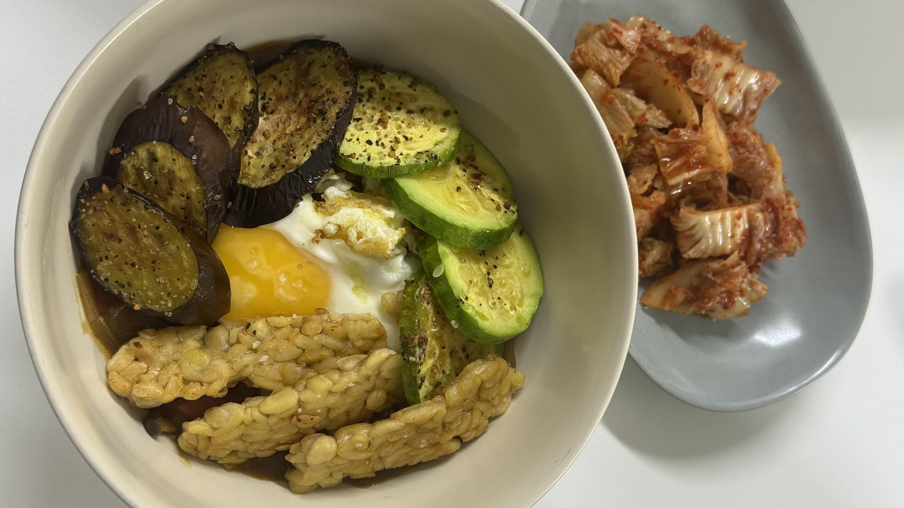
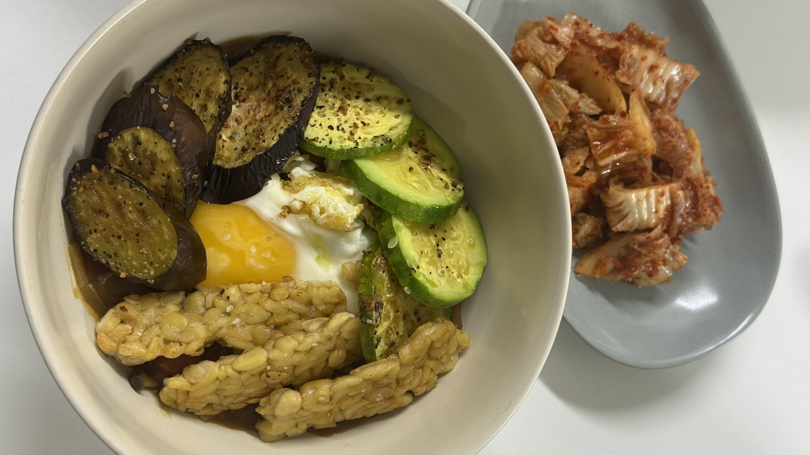

RaeEun Lee
Contact
Email: to.rae.lee@gmail.com
Phone: (+82)10-8288-0788
Research Focus
My academic and professional journey is driven by a core question: How can we detect, measure, and mitigate technical harms arising from large-scale algorithmic systems?
My research agenda integrates the following interdisciplinary approaches:
- Uncovering Sociotechnical Harms Not Recorded in Logs
- Designing Value-Aware Metrics Implementable in Systems
- Building Robust and Healthy Systems through Multi-layered Harm Detection
Publications & Public Engagement
Educational Book
I was approached by a major trade press in Korea to author the educational book for teenagers, If We Could Change the World with Coding. This project reflects my commitment to public outreach by clearly articulating the necessity of digital literacy and civic-minded coding.
Civic Engagement
My commitment to building a healthier society is reinforced by my work as an operations team member and spokesperson for BIYN. Learn more about BIYN.
Curriculum Vitae (CV)
A detailed overview of my education, technical skills, and work history is available here:
Hobbies
⚽ Soccer, 🍳 Cooking, 🧩 Puzzles

 
